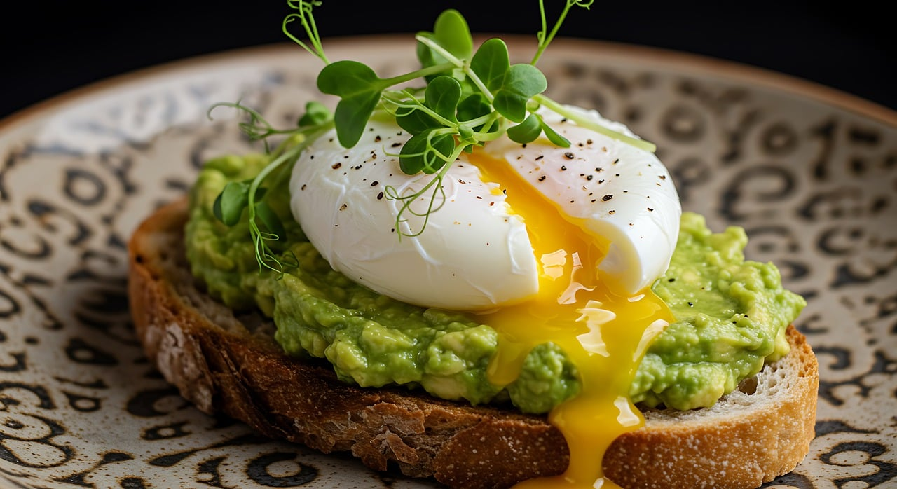

Avocado and eggs toast

Description
This elegant yet simple toast combines creamy avocado, tangy cream cheese, and savory smoked salmon, topped with juicy cherry tomatoes and a perfectly poached egg. It's a luxurious brunch or light lunch that's full of protein, healthy fats, and vibrant flavor.
Ingredients:
- 2 slices of sourdough bread (or bread of your choice, toasted)
- Vegetables:
- 1 ripe avocado, sliced
- 6 cherry tomatoes, halved
- 2 tbsp cream cheese
- 60–80g smoked salmon (2–3 slices)
- 2 eggs, for poaching
- 1 tsp white vinegar (for poaching water)
- Salt and pepper, to taste
- Fresh dill or chives (optional, for garnish)
- Olive oil (optional drizzle)
Instructions:
- Toast the Bread
- Lightly toast the sourdough slices to your preferred level of crispness.
- Prepare the Toppings
- Slice the avocado and cherry tomatoes. (If using fresh herbs, chop them now.)
- Poach the Eggs
- Bring a small pot of water to a gentle simmer (not a rolling boil).
- Add a teaspoon of white vinegar.
- Crack each egg into a small bowl.
- Create a gentle whirlpool in the water with a spoon and slide one egg in at a time.
- Poach for about 3 minutes for a soft yolk or longer if desired.
- Remove with a slotted spoon and gently blot on a paper towel.
- Assemble the Toasts
- Spread 1 tbsp of cream cheese on each toast slice.
- Layer with smoked salmon.
- Arrange avocado slices on top.
- Add cherry tomato halves.
- Top with Poached Egg
- Carefully place one poached egg on each slice.
- Season with salt and pepper.
- Drizzle with olive oil and sprinkle fresh herbs if desired.
- Serve Immediately
- Enjoy warm with a side of greens or fresh fruit for a full meal.